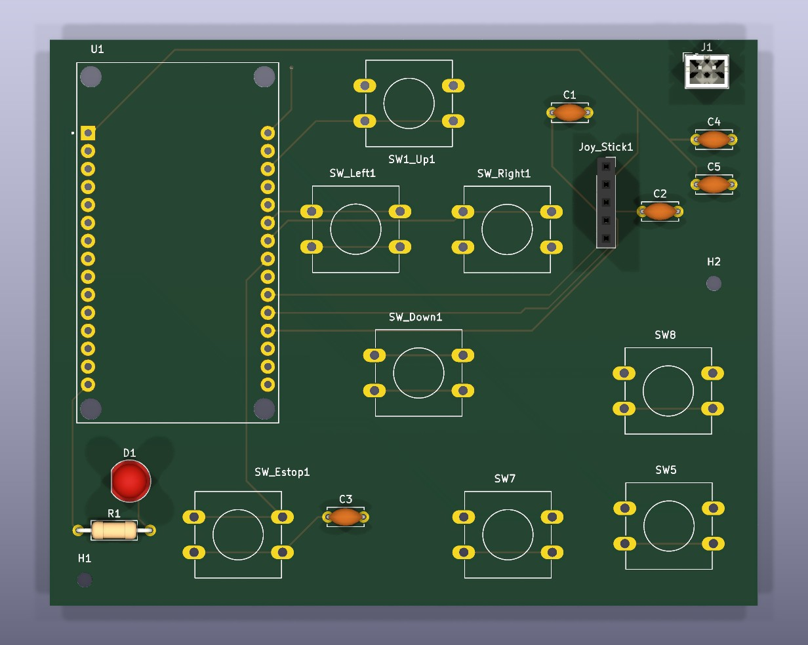

Wireless Mobile Marine Cargo Crane
| MCU | ESP32, dual core |
|---|---|
| RTOS | FreeRTOS, pre-emptive |
| Link | ESP-NOW + watchdog |
| Board | 2-layer, KiCad |
A scaled, remote-controlled mobile crane for moving cargo safely between levels. It drives on a differential-drive chassis, lifts with a vertical servo and swings on a 180° pivot, all coordinated by FreeRTOS on a dual-core ESP32 and driven from a handheld ESP32 remote.

How it works
| Part | Runs as | Job |
|---|---|---|
| Safety ISR | GPIO interrupt, highest priority | Watches four limit switches, cuts the PWM outputs straight away and notifies the fault task |
| Fault task | FreeRTOS task | Handles the fault the ISR reports |
| Actuator tasks | FreeRTOS tasks, core 1 | Drive the two DC gear motors through the L298N (hardware PWM) and the lift and pivot servos, synchronized with event flags and mutex-protected state |
| Command link | ESP-NOW into a length-1 queue | Carries operator packets from the handheld remote; a connection-watchdog timer guards the link |
Two choices that matter
- Stopping in the ISR, not in a task. When a limit switch trips, the interrupt cuts the motor PWM itself. Nothing waits for a task to be scheduled before the crane stops. (My partner wrote this part.)
- A command queue of length one. It only ever holds the operator's newest command, so the crane never works through a backlog of stale inputs. The watchdog catches a link that goes quiet.
What we're building
A two-person team project. I led the wireless link and the initial setup, and did the PCB design and the DC motor drive. My partner did the 3D design and implemented the limit-switch code.
My part
- The initial FreeRTOS setup: priority-based pre-emptive scheduling on a dual-core ESP32 that coordinates the drive chassis, the vertical lift servo and the 180° pivot servo.
- The ESP-NOW link from the handheld remote into a length-1 FreeRTOS command queue, guarded by a connection-watchdog timer.
- The DC motor drive: two DC gear motors through an L298N H-bridge with hardware PWM.
- Actuator tasks for the drive and the servos, synchronized through event flags and mutex-protected shared state.
- The two-layer handheld controller PCB, with power regulation, joystick and push-button inputs, hardware debounce and status LEDs.
- An IEEE-style software requirements specification with quantified timing requirements, schedulability analysis and a verification matrix.
My partner's part
- The limit-switch code: GPIO interrupts on four limit switches that cut the PWM outputs and signal the fault task.
- The 3D design: the printed chassis sled and the controller enclosure.
Tools & tech
ESP32FreeRTOSESP-NOWKiCadL298N H-bridgePWMInterrupts (ISRs)3D printing